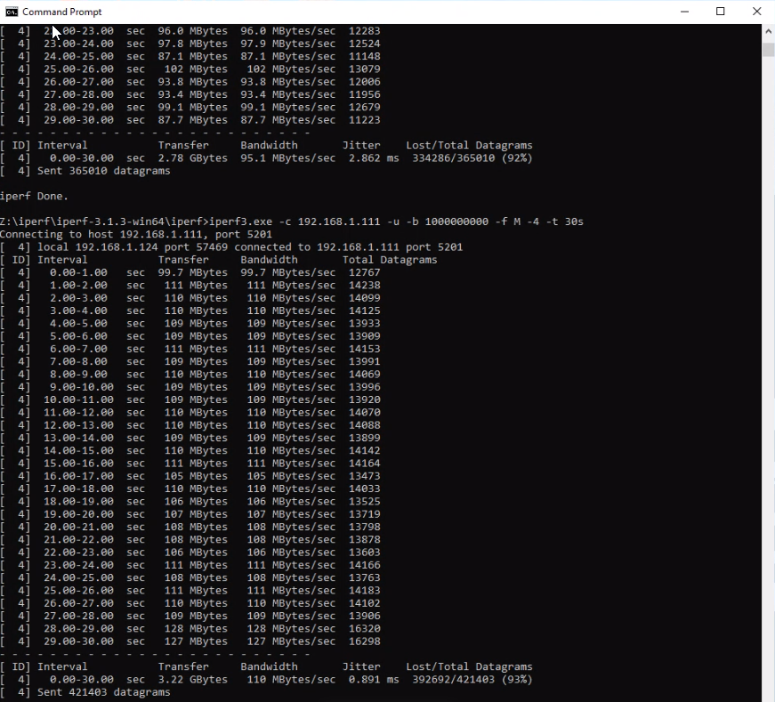

The Latest Technologies
Easy Perf Check uses the latest technologies to deliver to your clients a solution that is easy to use, customisable and enables your business to deliver network support that is straight to the point. No more wondering what's happening on the user side.
iPerf is a utility that every network engineer should have in their toolkit. It is used to test network throughput. Different to speed, which is often just a burst of traffic, throughput is a continuous stream – how much traffic can the network support for a sustained transfer.
Bandwidth is primarily a theoretical measurement, whereas throughput gives you an actual measurement of how much data can be transferred over a set period.
Throughput is particularly useful for testing traffic shaping and policing. The difference being that traffic policing has a drop or discard to police packets that are travelling through the tested path, whereas shaping maybe using a queueing strategy to hold traffic in a buffer before sending, due to a load.
When traffic is policed, this traffic is lost. If the traffic is TCP, it must be retransmitted, leading to slow networks. Applications that use UDP for efficiency, just end up operating poorly. Things such as SIP and RTP for VoIP applications, and video applications, do not manage well with policed traffic. You will have poor voice/video quality.
It is common for less experienced IT professionals to believe that bandwidth is the cause of this. But it is more often than not, unrelated to bandwidth, but more related to throughput.
Throughput speed is impacted by packet loss, latency, and jitter. Latency is the measure of delay on a network. It is how long it takes for the packet to travel from one device to another.
Jitter is the measure of the fluctuation in that travel time. Voice and video traffic generally become unworkable when jitter is above 150ms.
Often, people think by increasing their bandwidth, their network performance will be greater. This is evidenced most recently by NBN advertising. With suggestions that you can’t have more than one computer using the internet at a time, unless you have at minimum a 50Mbps speed tier. This is inaccurate. An ADSL connection at 10Mbps may have the same or better throughput than an NBN connection at 50Mbps due to the design and contention ratios on the NBN. Although the bandwidth is more, it does not mean that it is how much data that can be sustainably transferred across that network.
Iperf is a utility used to measure the throughput, and give a customized output, which can be used for diagnosing network problems. Iperf is unfortunately quite user unfriendly. It is a command line tool, that requires a user to have knowledge of the available command line switches to modify a test to suit the particular environment. Some of these switches are related to packet sizes, type of protocol ipv4 or ipv6, and TCP or UDP. You can set a bandwidth level to test to, and a length of time to test for.
To run a test with iperf, you first need to open a command prompt, navigate to the directory where iperf is located, and then enter a command similar to the below:
C:\iperf\iperf3.exe -c 10.1.1.1 -u -b 200000000 -f M -4 -t 120s
This command will run a client mode test with the server at 10.1.1.1 using UDP only, setting a bandwidth value of 200Mbps, using ipv4 only, displaying bandwidth results in Mbp/s for 120 seconds.
The project idea is to make this utility portable and user friendly. So, an ordinary computer user could run the utility from a web-type page at a time when performance is degraded, and be able to then easily export the test results for a network engineer to analyse remotely or at a later date.
One of the main goals of Easy Perf Check is to be a tool that enables Networking and IT Infrastructure business to provide a quick and easy way to diagnose issues for consumers of network traffic, either private or other businesses.
One of the struggles of providing Networking support is the end-users’ lack of technical knowledge. This generates frustration on both sides of the issue. Users do not understand what is happening and what is being done to resolve the incident. Support staff struggle to identify what the user problem is.
To take the opportunity and provide a better client experience, it is paramount that businesses are able to provide a simple, quick and easy-to-use tool for network issues diagnosis. iPerf, whilst being a fantastic tool, it lacks in user experience, being impossible to use out-of-the box without knowledge of Networking troubleshooting.

Easy Perf Check provides a simple and easy way for users to run iPerf commands. It consists of a webpage interface (HTML/CSS/JavaScript) that can be run in any browser. The interface consists of a few buttons with descriptive labels that a user can click and run the programs behind them.
When a button is pressed it triggers an event that fires-up a NodeJS server that can run iPerf in the background with the parameters defined by Easy Perf Check. By making the front-end on a page, the user interface can be customised to each client business, including branding. In addition, each business can also define what diagnostic routines they wish to include in their version of Easy Perf Check.